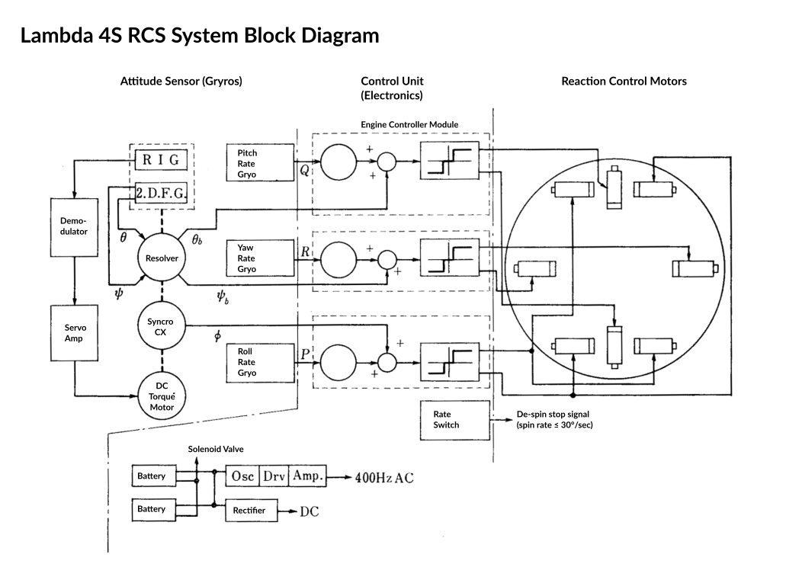
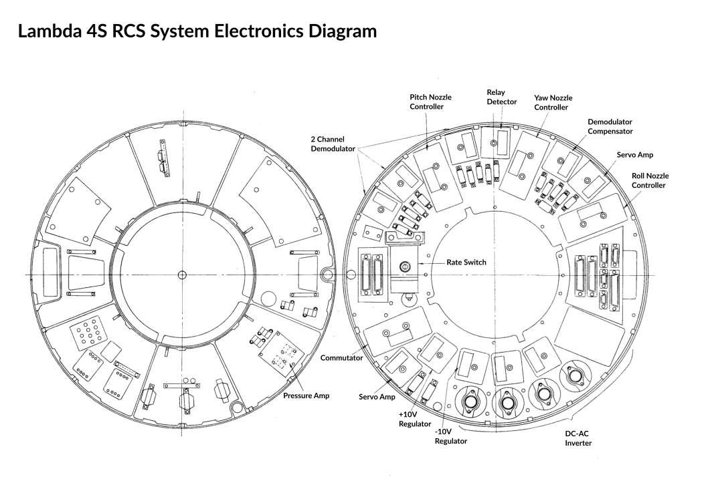
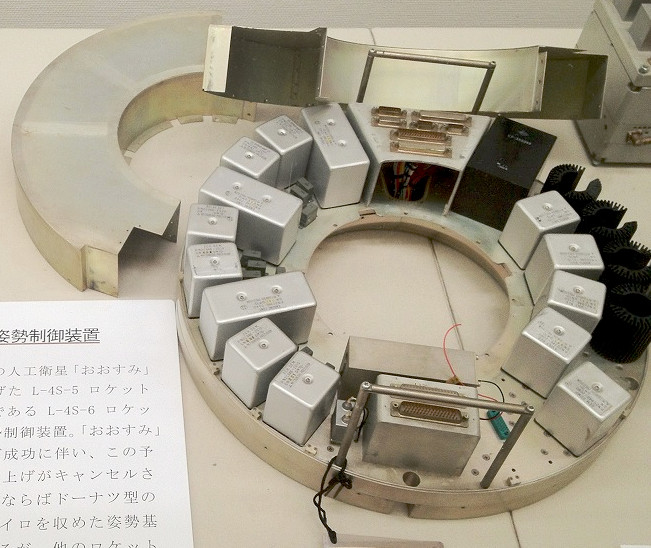
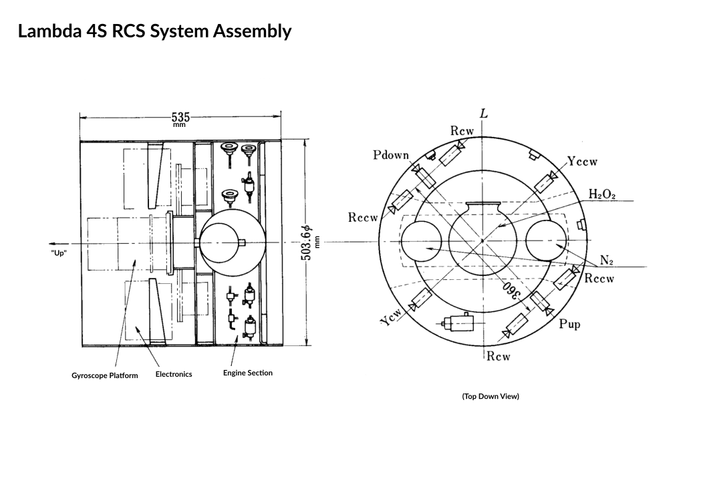

Guidance and Electronics
Just below the 4th stage sat a large terminal guidance system. This included a set of de-spin and re-spin motors, a hydrogen peroxide reaction control system, gyroscopes and electronics.
Table of Contents:
- Lambda 4S Trajectory
- Guidance System Timeline
- The Attitude Control System
- RCS Electronics
- Assembled System
Lambda 4S Trajectory
Orbit is having enough speed circling around the Earth to balance gravity. Getting such huge tangential velocities from a rocket launched from the ground involves going not just up, but sideways (downrange) at very high velocity. All launch vehicles need to somehow steer themselves from “up” to horizontal.
Lambda 4S was a very simple vehicle with only minimal guidance. Rather than smooth, continuously controlled flight, Lambda was flown unguided until the very last stage. This is basically the “Go up and turn right” method of orbital flight.
The first stage had large aerodynamic fins and flew entirely in the atmosphere. This kept the vehicle travelling with an angle of attack close to zero. In other words it flew like an arrow, with the fins keeping it headed in the direction it was travelling. As the rocket made it further up and further out downrange the angle relative to the horizon decreased as it gained speed (gravity turn).
Once out of the atmosphere there are no outside forces acting on the rocket to keep it straight. Another method must be used to control the attitude, in this case spin, or “gyroscopic” stabilization. Before the second stage fired it was spun up to about 850°/s. This kept the upper stages pointed in the same direction for the duration of the flight. The problem is that this fixed attitude isn’t the right angle to enter orbit! So they had to find a way to pitch the 4th stage down for the final burn.
Lambda 4S-5 Ascent
{kind=link}
After 3rd stage burnout a pair of pre-prepared solid fuel de-spin motors fired to bring the spin rate down as much as possible. Once the spin rate went below a certain threshold an analog computer and reaction control system (RCS) was used to null out the spin rate and point the vehicle down to the proper pitch angle. It also tried to restrain the Yaw angle to as close to 0 as possible (nulling out any residual errors from the 3rd stage burn).
Once the 4th stage was pointed in the right direction it was re-spun back up to a stable spin rate and the guidance section was ditched.
This was all monitored from the ground via radar and telemetry. If the pointing operation went well, the optimal ignition point was calculated and radioed up to the vehicle and an all clear was given to fly the final stage into orbit.
Guidance System Timeline
At the end of the 3rd stage burn we’re left with a 4th stage and guidance section spinning at a high rate and pointed the incorrect direction.
The main flight timer is programmed to fire a pair of de-spin rockets to slow down the roll rate to something manageable and an active system turns on just long enough to set the vehicle into the correct orientation. It then spins back up to stabilize the final stage and ready it for flight. The actual final stage burn is delayed until the ground tracking has verified the trajectory and computed the optimal time of ignition.
Lambda 4S-5 Timetable
| Time Since Liftoff [s] | Action | Trigger | Note |
|---|---|---|---|
| T+130 | 3rd stage burnout | Predicted time, could vary in flight | |
| T+148 | Retro-motor ignition | Timer | To avoid stage collision |
| T+150 | 3rd stage separation | Timer | Separation pyros fired by timer |
| T+160 | De-spin motor ignintion | Timer | Fixed, solid fuel de-spin motors |
| T+161 | RCS system start | Spin-rate sensor | Once the spin rate went below 30°/s the control system was enabled |
| T+232 | RCS system mode change | Timer | After settling the attitude the system started to re-increase the roll rate |
| T+262 | Re-spin motor ignition | Timer | Bring 4th stage spin rate to stable speed |
| T+475 | Separation pin removed | Timer | Arm 4th stage (prevent early firing) |
| T+476 | 4th stage separation | Control system ditched | |
| T+477 | 4th stage ignition | ||
| T+508.5 | 4th stage burnout | In orbit! |
The Attitude Control System
The attitude control system consisted of a 2 degree-of-freedom stable platform gyroscope mounted on a spin table. While the stable platform was much like any other stable platform inertial system, it only accounted for pitch and yaw. Since the vehicle would be spinning at a high rate during parts of the flight, the roll-axis of the platform was designed differently.
Output from the fixed platform and additional rate-senors were fed into an analog controller that output a signal for electrically driven valves controlling the maneuvering jets (RCS). When turned on the system then tried to zero out the error signals from the roll axis and strapdown table, thus pointing the rocket in the correct direction.
The RCS was a hydrogen peroxide (H₂O₂) monopropellent pressurized with nitrogen. H₂O₂ was individually cut off from each rocket nozzle (two for pitch, two for yaw, 4 for roll) by solenoid valves controlled by the system electronics. The nozzles used a catalyst in their chambers to rapidly decompose the hydogen peroxide into hot gas. Each nozzle produced about 3 Newtons of thrust.

The correct attitude (orbital insertion angle) was computed on the ground based on simulations of the flight. The stable gyro platform was then set to that computed attitude before launch. This is how the control system was “programmed”.
RCS Electronics

Photo of a mockup of the RCS electrical system in a museum:

Assembled System
The final control section included fuel tanks, thrusters, electronics, the gyroscope and telemetry radios and antennas.
